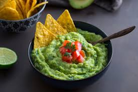

Fresh Guacamole

Ingredients
- 3 ripe avocados
- 1 lime, juiced
- 1/2 tsp salt
- 1/2 cup diced onion
- 3 tbsp chopped cilantro
- 2 Roma tomatoes, diced
- 1 tsp minced garlic
- 1 pinch cayenne pepper (optional)
Instructions
- Mash avocados in a bowl.
- Add lime juice and salt, mix well.
- Stir in onion, cilantro, tomatoes, and garlic.
- Add cayenne pepper if desired. Serve with tortilla chips.